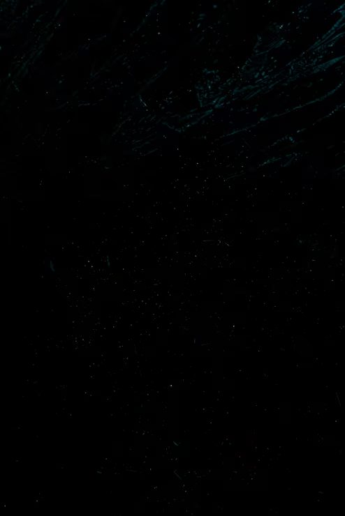

заглушка · детализация 3/10
текстура вместо рисунка
Тёмный тёмно-серый камень. Это самая тёмная из заглушек каталога, и на сто процентов честная по контрасту: тёмный фон прощает огрехи вёрстки, потому что их не видно. Поэтому текст положена не «на глаз», а на подложку, а мелкая подпись на фоне страницы подобрана светлее, чем захотелось бы для тёмной темы.
Настоящей подачи «Камень» пока нет: нет текстов, нет снимков работ, нет замеров. Страница существует ровно для двух вещей — чтобы ссылка в каталоге вела куда-то осмысленное, а не в обрыв, и чтобы каталог можно было открыть с телефона и убедиться, что витрина живая.
Здесь сознательно нет:
Наполнить эту страницу — работа на несколько дней, и делать её на выдуманных данных бессмысленно.

тон под линзой: тон пикселя снимается при первом движении